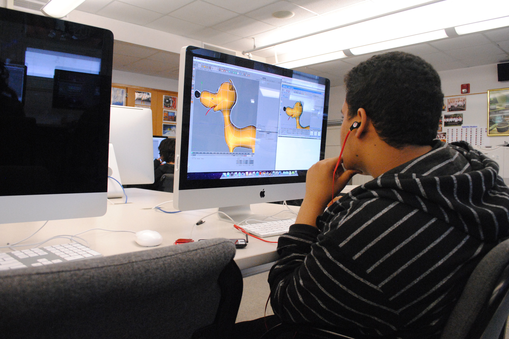

Media Arts & Technology Department

Animation & Motion Graphics
The Animation and Motion Graphics program provides students with the fundamentals of two- and threedimensional (2D and 3D) animation, motion graphics, and special effects. Once necessarily hand-made, expensive and rare, animation has undergone a technical transformation and is now a ubiquitous part of special effect, advertising campaigns, video games, movies, and television.
Upon completion of the program requirements, the Associate of Science degree in Animation and Motion Graphics is awarded. Graduates of this program can enter a growing profession or transfer to bachelor-level programs in Animation at Lehman College or other media related programs at senior colleges.